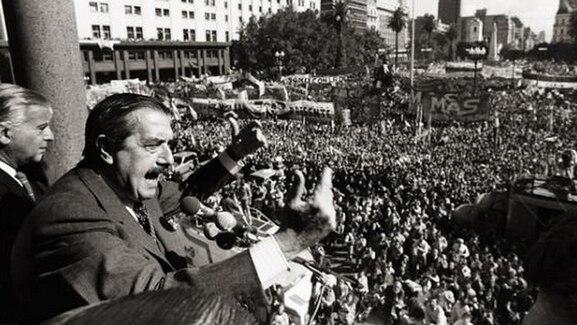
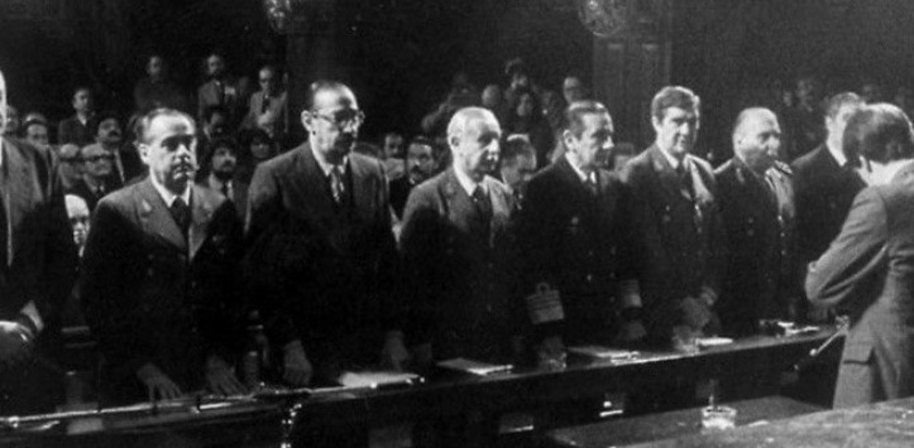
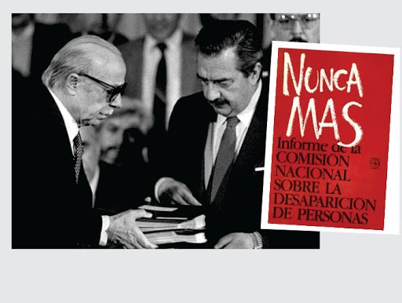

Legado de Raúl Alfonsín
Su figura quedó asociada a la recuperación democrática, la defensa de los derechos humanos y el fortalecimiento de las instituciones republicanas.
"Con la democracia se come, se cura y se educa."

Consolidación de la democracia
El principal legado de Raúl Alfonsín fue la consolidación de la democracia en Argentina. Tras más de siete años de dictadura militar, asumió la presidencia el 10 de diciembre de 1983 con el desafío de reconstruir las instituciones democráticas y recuperar la confianza de la sociedad en el sistema político.
Durante su gobierno se garantizaron las libertades individuales, el respeto por la Constitución y la participación ciudadana. Además, se fortaleció el funcionamiento de los poderes del Estado y se promovió la resolución pacífica de los conflictos políticos. A pesar de las dificultades económicas y las presiones militares que enfrentó, Alfonsín logró preservar el orden democrático, sentando las bases para el período democrático más largo e ininterrumpido de la historia argentina.

Juicio a las Juntas Militares
Uno de los hechos más importantes de su presidencia fue la realización del Juicio a las Juntas Militares en 1985. Este proceso judicial permitió juzgar a los principales responsables de las violaciones a los derechos humanos cometidas durante la última dictadura militar.
Fue un acontecimiento histórico tanto para Argentina como para el mundo, ya que por primera vez un gobierno democrático llevó a juicio a los máximos responsables de una dictadura mediante los mecanismos de la justicia civil. Las condenas demostraron el compromiso del gobierno con la verdad, la memoria y la justicia, convirtiéndose en un símbolo de la defensa de los valores democráticos.

Defensa de los derechos humanos
Raúl Alfonsín impulsó una política orientada a la defensa de los derechos humanos y al esclarecimiento de los crímenes cometidos durante la dictadura. Para ello creó la Comisión Nacional sobre la Desaparición de Personas (CONADEP), encargada de investigar los casos de desapariciones forzadas y recopilar testimonios de las víctimas y sus familiares.
El trabajo de la comisión dio origen al informe "Nunca Más", un documento fundamental para conocer lo ocurrido durante el terrorismo de Estado. Este informe se convirtió en una herramienta clave para la memoria histórica del país y contribuyó a que las nuevas generaciones comprendieran la importancia de proteger los derechos humanos y la democracia.
Un símbolo de la democracia argentina
Más allá de las dificultades de su gobierno, Raúl Alfonsín es recordado como una de las figuras más importantes de la historia democrática argentina.